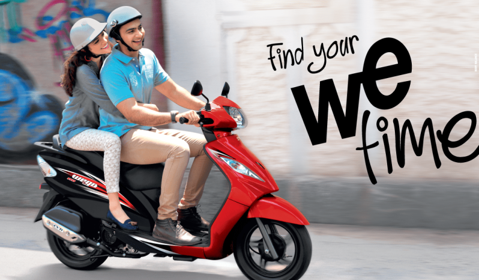
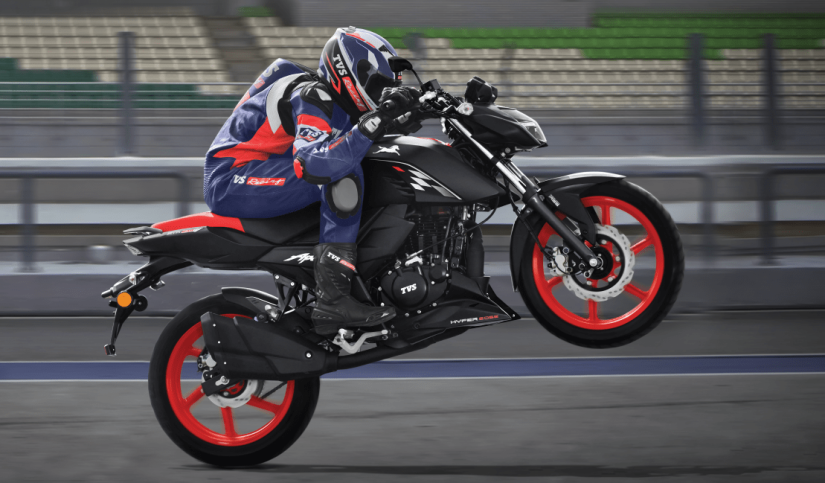

TVS Auto Bangladesh Ltd is a joint venture between TVS & Sons and Rian Motors of Bangladesh. Within Twelve Year of operation Company has become the second highest seller of two-wheeler in the country among the Indian Makes. TVSABL derives its synergies in the form of local knowledge from Rian Motors and expertise of TVS & Sons in managing distribution business for more than five-year decade. Read more TVS Auto Bangladesh Ltd. Since 2007 TVS Motor’s strength lies in its extensive research and development, resulting in products that are industry leading in terms of innovation. We at TVS deliver total customer satisfaction by anticipating customer need and presenting quality vehicles at the right time and at the right price.
Both the bikes offer reliable performance and a good set of features at an affordable price. Sporty Commuters: When it comes to sportier offerings in the commuter segment, the best options available are the TVS Apache RTR 160 4V and the TVS Apache RTR 200 2V.
